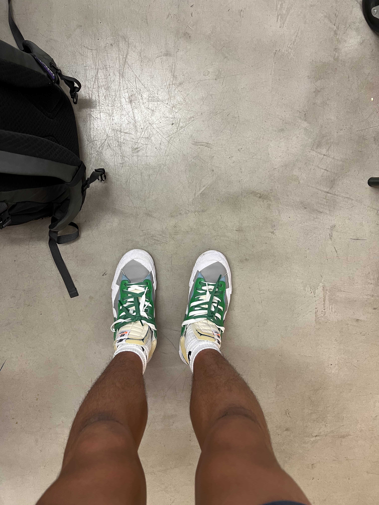

COLORS
here is the website that includes all five colors from my adobe capture picture. I used a modified version of a complementary color palette. The emotion I was going for was something that was a little more natural. I centered the completmentary color scheme around the green color and adjusted the other colors to be more earth-like.
